S0 Can spatial transcriptomics tell these diseases apart — and where does it stop?
This walks one question through 16 human-kidney Xenium sections: can in-situ, single-cell, ~5,000-gene spatial transcriptomics show how IgAN, MN and AA-amyloid differ from diabetic kidney disease (DKD) and from controls — and where does the method run out of road?
- DKD vs control is the powered backbone (8 DKD, 3 control). Real replicate spread, shown everywhere.
- IgAN (1003), MN (1005), C3GN (1007) are SINGLE SECTIONS — reconnaissance, hypothesis-generating, nothing is statistically tested. AA-amyloid is n=2. One patient per section, no donor replication.
- Two headline axes are panel-limited and we say so where they bite: the IgA isotype (the defining axis of IgAN) is not measurable on this panel; the follicular-TLS marker CXCL13 is presence-only.
- The credibility comes from two things a slide reader can audit: our cell calls are validated blind against the published atlas, and we caught and reversed two of our own over-claims (shown in S7, not hidden).
Plain-language bridges used throughout — segmentation = drawing each cell's boundary on the image; typing = calling identity from expression; aggregate / DBSCAN = an unbiased way to find cell clusters (shown beside the image so you can see it's a real lymphoid aggregate); ambient / spillover = transcripts misassigned across cell boundaries, the failure mode we actively control for.
S1 The data, for a slide person
Xenium is in-situ: the tissue is never dissociated. Each transcript is imaged at its location, assigned to a segmented cell, and ~5,000 genes are measured per cell with the architecture intact — the spatial equivalent of a multiplexed IHC you can re-stain 5,000 ways. That is the whole reason a glomerulus stays a glomerulus and an immune aggregate stays an aggregate.
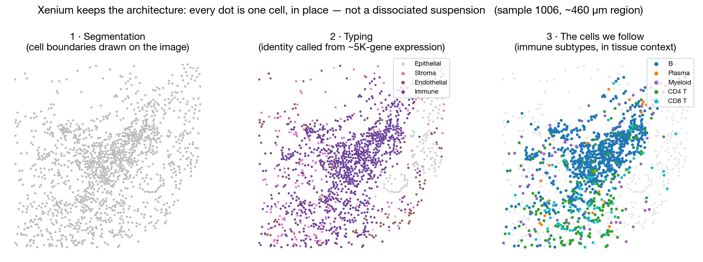
From image to cells we can follow: (1) segmentation draws boundaries; (2) typing calls identity from the ~5K-gene profile; (3) the immune subtypes we trace downstream, still in tissue context. One ~460 µm region of sample 1006.
Cohort: 16 sections — 8 DKD, 3 control, plus IgAN / MN / AA-amyloid (×2) / C3GN as references. Large image and per-transcript files stay on disk; we work from the cell-by-gene matrix + coordinates.
S2 Trust the calls: blind re-annotation, validated against the atlas
Before any biology: are the cell-type calls real? We re-integrated within this atlas (Harmony on sample) and re-annotated the whole object blind to the authors' labels, then compared. This is NOT the separate 68-gene three-cohort integration — that coarser cross-platform exercise is kept apart; here we use the full ~5K panel.
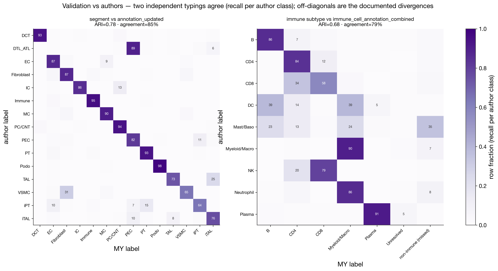
Our blind labels vs the authors' published annotation. Segment-level ARI 0.78, immune ARI 0.68 — strong agreement, achieved without looking at their calls.
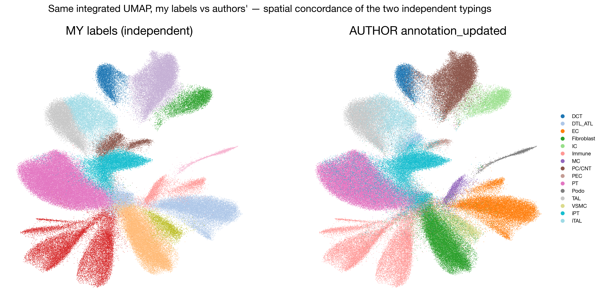
Same cells, our typing vs theirs, on the integrated embedding — the populations land in the same places.
Takeaway a bench biologist can hold onto: "their published calls and our independent, blind calls agree" — so everything downstream rests on validated identities, not on our say-so.
S3 Top-level composition, by disease group
Start where IHC starts: what is the tissue made of? Every dot is one section, grouped by disease; a median bar is drawn only where n>1, so the single IgAN/MN/C3GN dots can't masquerade as a group.
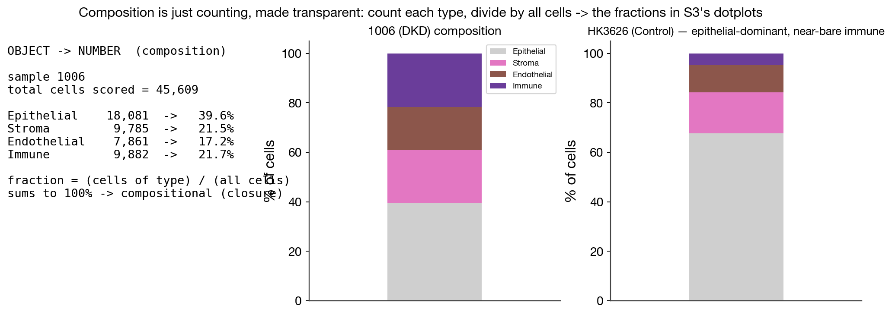
Object → number for composition: count cells of each type, divide by all cells. Transparent, and the basis of every dot below.
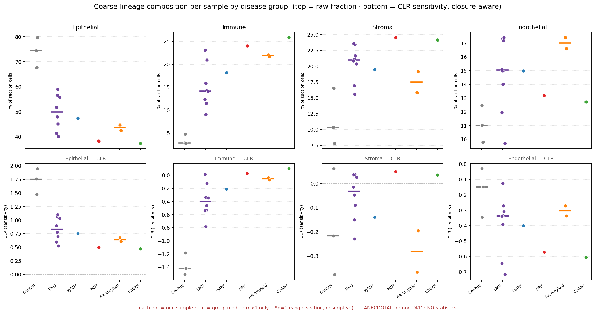
Coarse lineage. Control is epithelial-dominant (74%) with a near-bare immune compartment (2.8%); every disease loses epithelium and gains immune + stroma. The CLR row (closure-aware) tracks the raw ordering.
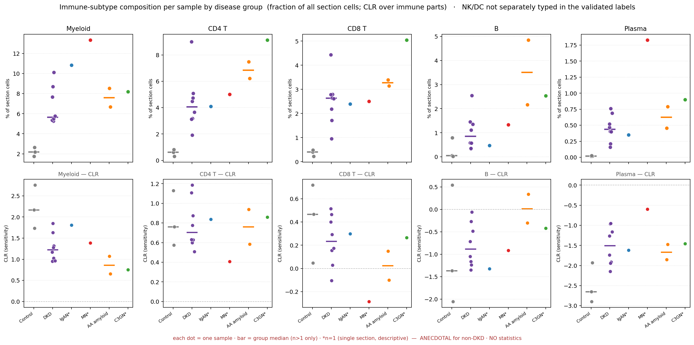
Immune drill-down. Single-section standouts: MN most immune/plasma-skewed, C3GN most T-skewed, AA highest B-fraction. NK/DC are not separately typed in the validated labels — not invented.
Closure noted: fractions sum to one, so they are compositional; we read them descriptively and show a CLR sensitivity view rather than testing them.
S4 Organization, not just composition — finding aggregates
Composition says how much immune; it doesn't say whether the immune cells are organized. To ask that without cherry-picking, we run DBSCAN — an unbiased clustering that either finds a dense cell cluster or doesn't. Here is the object→number, shown beside the image so you can see the hull is a real lymphoid aggregate — and, crucially, the negative control: the same algorithm on IgAN finds nothing.
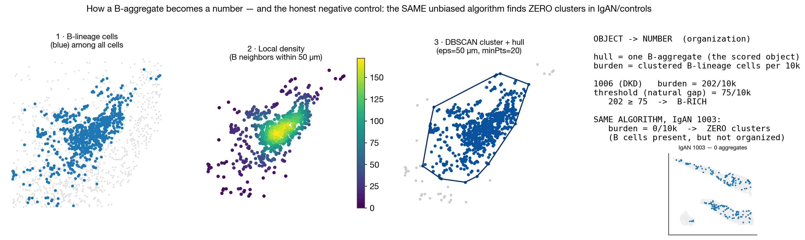
B-lineage cells → local density → DBSCAN core/hull (the scored object) → burden per 10k → threshold. Sample 1006 scores 202/10k (B-rich); the SAME algorithm on IgAN 1003 returns ZERO clusters — B cells are present but not organized.
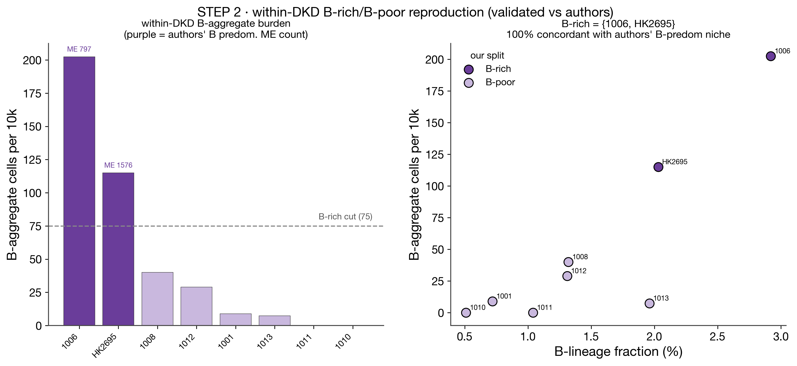
Within DKD, aggregate burden has a clean ~3× gap → a B-rich subgroup = {1006, HK2695}. This reproduces the authors' B-cell-rich subgroup: 8/8 concordant with their B-predominant immune niche.
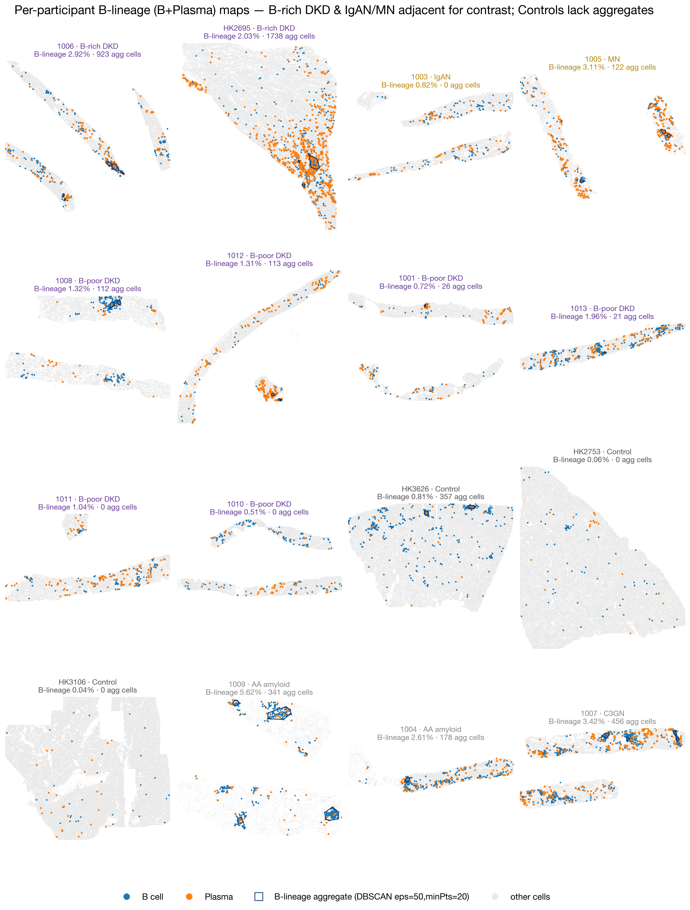
Every section, grouped: B (blue) + Plasma (orange) with aggregate hulls. B-rich DKD show compact follicular-looking aggregates; IgAN and controls have none under the identical algorithm.
S5 Two spatial programs (the centerpiece — robust within a section)
This is where spatial earns its keep, and it holds at n=1 because it is measured within each section (every cell relative to its own neighbors). Two orthogonal logics:
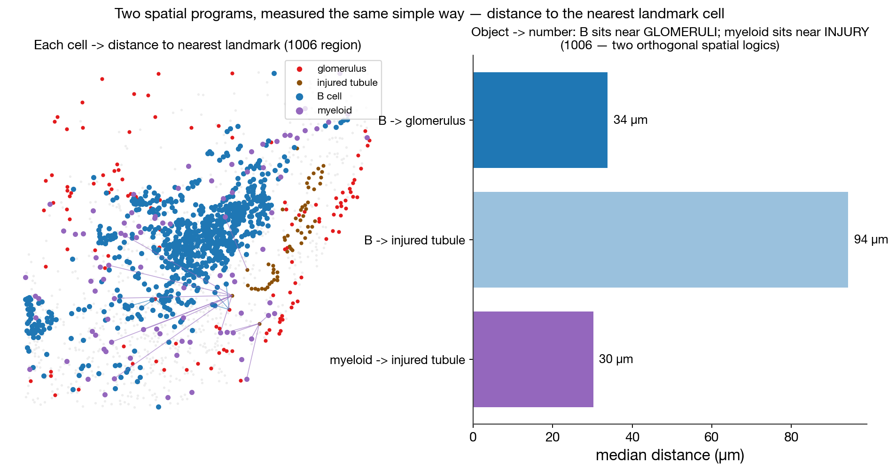
Distance object→number: in 1006, B cells sit ~34 µm from glomeruli but ~94 µm from injured tubules, while myeloid sit ~30 µm from injury. B-lineage organizes near GLOMERULI; myeloid tracks INJURY.
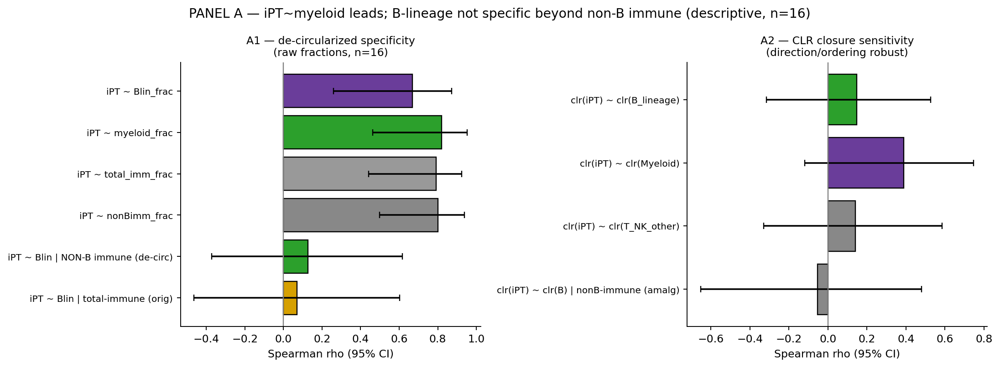
Across sections, tubular injury co-localizes with MYELOID infiltration (ρ = 0.82 [0.46, 0.95]); the B-lineage association does not survive de-circularization (partial 0.13, CI spans 0).
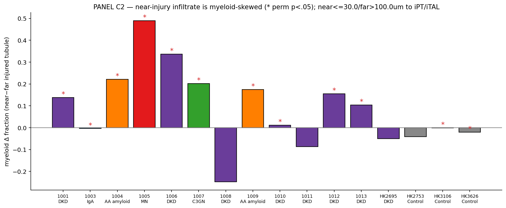
The near-injury immune compartment is myeloid-skewed in 12/16 sections; B-lineage is depleted near injury — consistent with the distance picture.
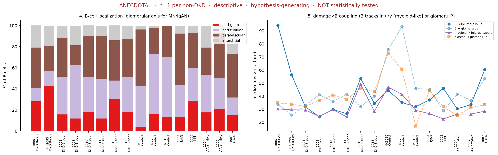
The same B-vs-myeloid distance contrast across all samples (from the B-lineage analysis): B-to-glomerulus ≪ B-to-injury; myeloid hugs injury everywhere.
One sentence: injury recruits myeloid; B-lineage organizes around glomeruli/aggregates — two different spatial programs in the same kidney.
S6 B-lineage programs across nephropathies (reconnaissance)
Layering mechanism onto the single-section references gives three apparent B-lineage programs. These are anecdotes to test, not results — and the panel limits are stated exactly where they bite.
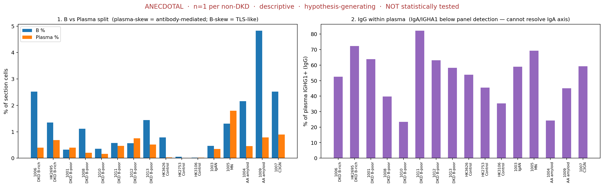
Splitting B vs Plasma: MN is the one plasma-skewed glomerular disease with IgG-dominant plasma. LIMIT: IgA (the defining IgAN isotype) is below panel detection in plasma — the IgA axis is NOT testable here; only the IgG arm is.
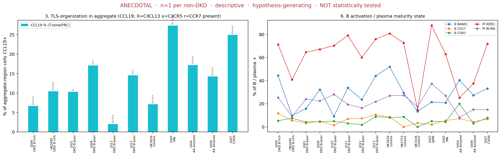
TLS organization + cell state: only DKD B-rich (HK2695) carries substantial follicular CXCL13. LIMIT: CXCL13 is below the quantitative floor → reported presence-only; CCL19 is the quantitative TLS marker.
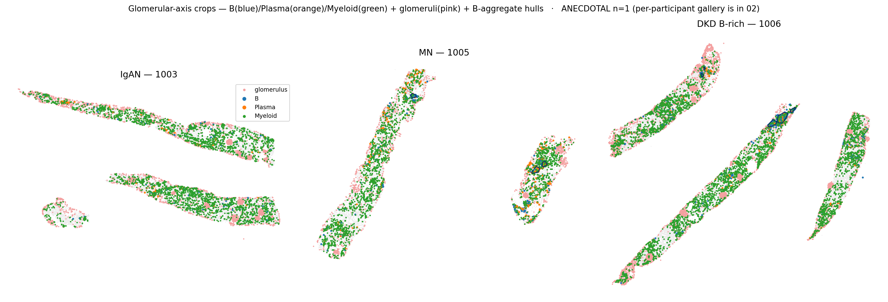
Region crops — IgAN / MN / DKD B-rich. DKD B-rich = organized, B-skewed, follicular-flagged; MN = plasma-skewed, IgG-dominant, mixed/T-zone; IgAN = diffuse, peri-vascular, no aggregate, mature plasma.
S7 How we avoided fooling ourselves (two self-corrections)
Ambient / spillover in one line: transcripts occasionally get assigned to the wrong neighboring cell across a segmentation boundary, creating a faint smear of signal where it isn't really produced. If you don't control for it, you "discover" things that are just spillover. We did — and it cost us two claims.
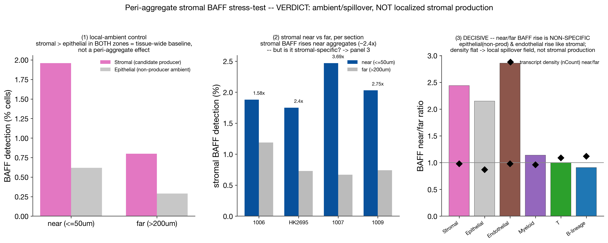
Self-correction 1: we initially read a peri-aggregate STROMAL BAFF niche. Under an ambient stress-test it did not survive — non-producer epithelium and endothelium rise just like stroma near aggregates → a local spillover field, not stromal production. The localized-niche claim is RETRACTED.
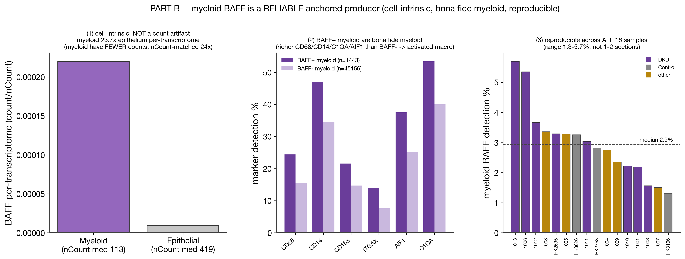
What survives (the canonical BAFF result, 03/04): a tissue-wide MYELOID producer, cell-intrinsic and reproducible (16/16), ~24× the epithelial floor per-transcriptome — but with NO aggregate-specific niche. APRIL is a NO-GO (sub-floor).
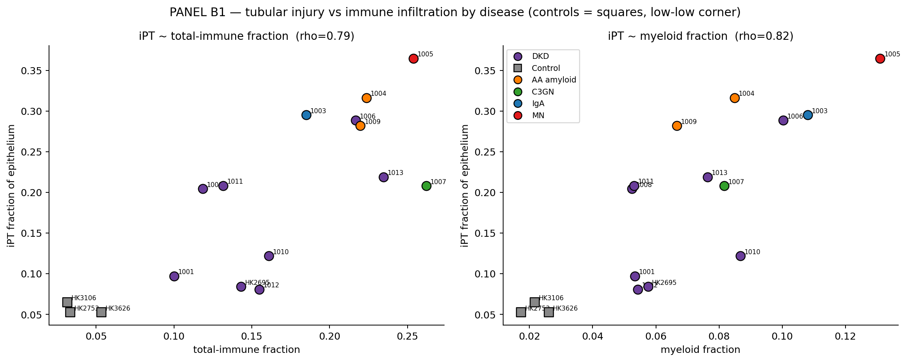
Self-correction 2: an earlier 'tubular injury sits near B-aggregates' reading. De-circularized, the injury association is MYELOID, not B-lineage (S5). The B-specific claim is RETRACTED; the myeloid one is stated in its own right.
Why this matters to a skeptic: the analysis visibly disproves two of its own attractive stories. That same discipline is what makes the surviving claims — validated typing, the two spatial programs — trustworthy.
S8 Synthesis, honest limits, and the study this motivates
What spatial transcriptomics CAN do here: (1) reproduce published cell identities blind (ARI 0.78/0.68); (2) quantify composition and organization (DBSCAN aggregates) per section; (3) reveal two orthogonal spatial programs — injury↔myeloid, B-lineage↔glomeruli — robust within a section.
Where it STOPS (stated, not hidden):
- Single-section disease claims are hypotheses. IgAN/MN/C3GN n=1; AA n=2; one patient per section; no donor column → no biological replication for the references.
- Panel limits. IgA isotype unmeasurable (IGHA1 sub-floor; IGHM/IGKC/IGLC absent) → the defining IgAN axis can't be tested; CXCL13 presence-only → follicular-TLS is flagged, not quantified.
- Typing caveats. iPT (injured PT) recall ≈ 0.64 → injury distances are conservative; CD8 recall ~0.58.
- Associational. All co-localization is correlational within fixed tissue — no dynamics, no causation.
The powered study this motivates: a multi-donor cohort per nephropathy (IgAN, MN, AA, C3GN) on a panel carrying the missing isotype + follicular markers (IGHA/IGHM/IGKC, CXCL13/CXCR5/CR2), to TEST the three candidate B-lineage programs and the injury↔myeloid vs B↔glomeruli dissociation that this reconnaissance generated.
| step | tool | what it does |
|---|---|---|
| typing / integration | scanpy · harmonypy | within-atlas Harmony(sample) + blind re-annotation (full ~5K panel) |
| validation | scikit-learn | ARI / confusion vs the authors' published labels |
| aggregates | scikit-learn DBSCAN · scipy | eps=50 µm, minPts=20; cKDTree neighborhoods; ConvexHull |
| co-localization | scipy · numpy | Spearman + bootstrap CIs; de-circularized partials; within-section permutation |
| composition / state | pandas · numpy | per-section fractions; CLR sensitivity; producer-conditioned, ambient-gated detection |
| figures | matplotlib · figstyle | slide-grade panels; region crops; committed PNG |
- object→number scoring shown for composition (S3), aggregates (S4), distance (S5)
- individual replicates grouped by condition (Control/DKD/IgAN/MN/AA/C3GN) in S3 & S4
- all spatial zooms are region-crops (S1, S4, S5, S6)
- aggregate determination incl. the ZERO-cluster IgAN case (S4)
- two self-corrections DISPLAYED — BAFF niche + damage→B (S7)
- panel limits displayed where they bite — IgA untestable, CXCL13 presence-only (S6, S8)
- one canonical BAFF (03/04 myeloid anchor; not 02's earlier panel)
- numbers sourced from committed CSVs/REPORTs
- lightweight: images referenced by RELATIVE PATH (no base64) → committable